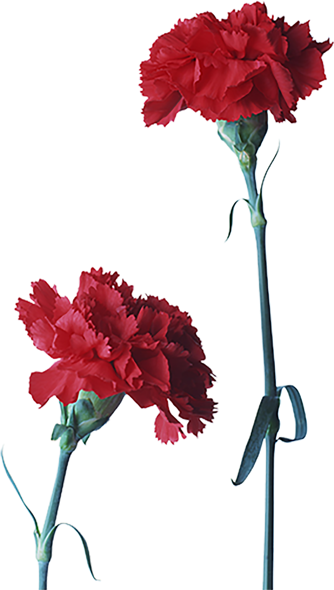

Home
Essas flores representam tudo que você representa para nós
Delicadas, as margaridas representam pureza e sensibilidade. Essa flor também é símbolo de lealdade, amor fiel e verdadeiro, sentimentos essenciais entre amigos.

O cravo é um símbolo clássico do amor romântico. Graças às suas pétalas vibrantes, o cravo está sempre presente em arranjos florais para o Dia dos Namorados, logo após a clássica rosa vermelha.
A flor foi usada com frequência por movimentos socialistas e trabalhistas porque tonalidade vívida combinava com o vermelho socialista/comunista. O cravo substituiu a foice e o martelo como símbolo do Partido Socialista Italiano antes de sua dissolução final.
O cacto representa proteção e resistência. Ele é um símbolo de ajuda em situações difíceis. Por ser uma planta resistente e adaptável, além de possuir um exterior forte e um interior belo, possui uma simbologia de fortaleza e persistência.
Anastásia é uma flor muito complexa, tendo significados muitos distintos, o mais aceito é a ligação e a harmonia entre o céu, terra e o sol, sendo a conexão total entre eles.